|
|
|
Летний бэккантри-лагерь Ульзыха
(1-5 июня 2006) Йооо-хооо ! 1 июня. Байкальский Экстрим в лице Климова Сергея и Залесовой Оксаны со товарищами-земляками принимали в гости, довозили, доводили, кормили, все по полной программе, в присущем только им душевном и оптимистичном стиле :) Улан-Удэ - Вера Торонова, Гарматов Чингиз, Сергей Булгаков,
Стас Кадрулев, Катя, Женя Сенных. Рад за синоптиков - честно предупреждали о дождях с 1 по 5, рад за людей в лагере, которые все это выдержали. Как заходили 1-го в дождь, плавно переходящий в снег, так и катались 2, 3, и 4-го. Наверху валит не летний такой снежочек до 20-30 см покрова, а в лагере холодный дождь со снегом. Но не постоянно, бывали и прояснения, однако шорты и купальники никому не пригодились. 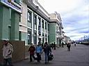 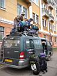 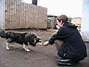 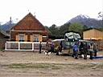 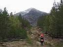 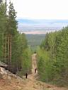 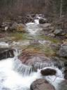 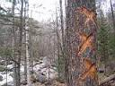
2 июня. Первый катальный день порадовал - поднялись и спустились с перевала НКТ, потом еще поднялись и прокатились по кулуару Прямой. Видимости почти никакой, облачность низкая, зато есть хороший свежий снег.
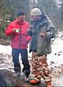 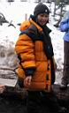 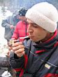 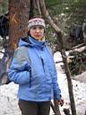 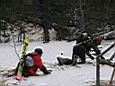 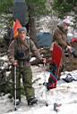 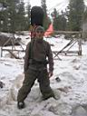 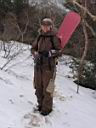 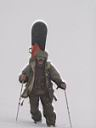 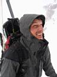 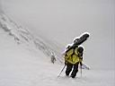 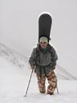 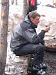 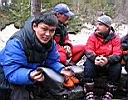 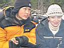 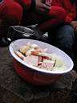 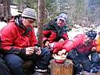 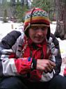 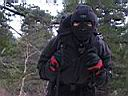 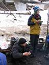 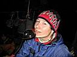 Из отчета Байкальского Экстрима :
Это еще не все! Впереди - три дня! Смотрите продолжение...
|
|